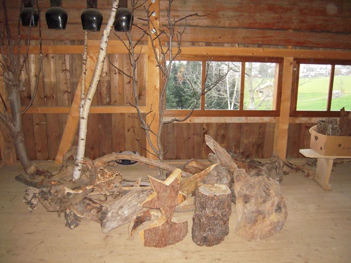

Figuren schaffen
Engel und Krippenfiguren wurden hergestellt, Gesichter bemalt und Szenen dekoriert. Aus Holz, Stoff und Farbe wurden die Begegnungen am Weg.
Engelweg · Gemeinsam getragen
Was es brauchte, damit aus den ersten Figuren ein gemeinsames Weihnachtserlebnis werden konnte.
Eine Initiative, von vielen mitgetragen
Am Anfang standen die Überzeugung, die Initiative und die Figurenarbeit einer Person. Mit freiwilliger Hilfe wurde daraus ein Erlebnis, das viele miteinander teilen konnten.
Die Initiantin übernahm die Projektleitung und stellte Engel- und Krippenfiguren her. Andere brachten ihr Können beim Bemalen der Gesichter und Figuren, bei den Dekorationen, der Organisation und der Gestaltung der Informationen ein.
Für das fertige Wiehnachtserläbnis brauchte es zudem ein Gelände, Helfende für den Aufbau, Menschen zum Erzählen und Basteln sowie finanzielle Unterstützung. Jede dieser Aufgaben gehörte dazu.
So wurde aus Figuren ein Erlebnis
Engel und Krippenfiguren wurden hergestellt, Gesichter bemalt und Szenen dekoriert. Aus Holz, Stoff und Farbe wurden die Begegnungen am Weg.
Häuschen wurden aufgestellt, Stromkabel verlegt, Holzschnitzel verteilt und das Gelände vorbereitet. Später musste alles wieder abgebaut werden.
Im Chlaushüsli wurden die Weihnachtsgeschichte erzählt und Bastelangebote begleitet. So wurde aus dem Anschauen auch ein gemeinsames Erleben.
Auch zwischen den Winterausstellungen wurden die Figuren geputzt und geflickt. Erhalten und Weiterplanen gehörten ebenso dazu wie der Aufbau.


Ein herzliches Dankeschön.
Das Projekt war auf tatkräftige und finanzielle Hilfe angewiesen, um die Ausstellungskosten zu decken und weitere Winter planen zu können. Gäste, Helfende und Unterstützende trugen auf unterschiedliche Weise dazu bei.
Der Dank gilt allen, die Zeit, Wissen, Material, Räume oder Beiträge dafür zur Verfügung stellten. Ihre Arbeit steht hinter den Figuren, dem Weg und den gemeinsamen Weihnachtsmomenten.
Diese Seite würdigt die Unterstützung der früheren Ausstellungen. Sie enthält keinen aktuellen Spendenaufruf und kein Anmeldeangebot.
Zur Entstehung des Wiehnachtserläbnisses